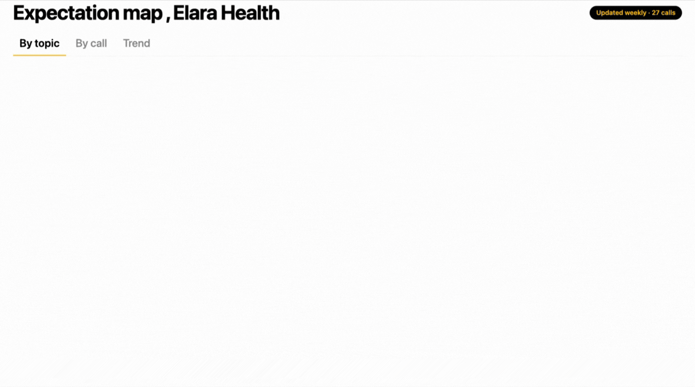
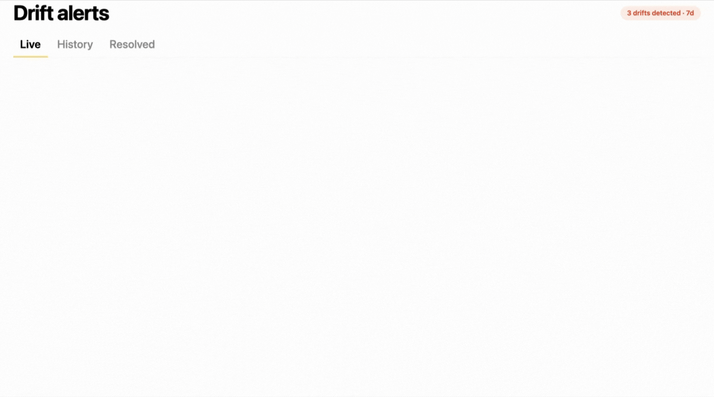
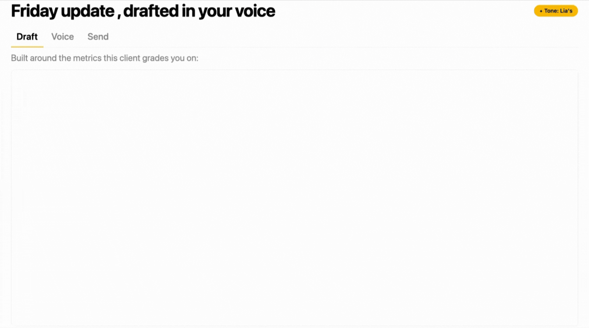

FOR · PERFORMANCE / OPERATIONS
Turn every client interaction into operational data.
See where the hours go, which processes are landing, and how sentiment is trending - all flowing into the BI tools you already use.

The level of information and the frequency of information is on a scale that we’ve never been able to achieve before.
Gabriella Krite
Managing Partner of Operations
The Kite Factory
Why performance and operations leaders love Kaizan
The things Performance and Operations Leaders love.
01
See where the hours actually go.
Time across calls, comms, and meetings - per client, per team, per discipline - so profitability conversations happen on data, not feel.
02
Process compliance, finally visible.
Are weekly status meetings happening? QBRs on cadence? Senior reviews on the right clients? Stop asking, start seeing.
03
Client sentiment trended over time.
Not a snapshot - a trajectory you can correlate with the levers your team is pulling.
04
AI Helpers running the reports overnight.
Anomalies, outliers, and exceptions surfaced before the day starts - so you act on what happened yesterday, not what surfaces a week later.
How Kaizan helps
Operational reporting that finally maps to what the client is actually thinking.
01
Expectation map
For every client, what they say they care about, ranked by how often they raise it in conversation. Updated weekly.

02
Drift alerts
When the client’s language about success changes - different metrics, different timeframes, different competitors - you get the alert.

03
Auto-drafted weekly
The Friday client update, drafted in your voice, around the metrics this client actually grades you on.

FAQs
The questions performance and operations leaders ask us.
Can I export raw data into our warehouse / BI tool?
Raw data exports into the warehouse and BI tools your team already runs, so client interaction data sits next to your other operational metrics rather than in a separate silo. The API is on every tier from Team upwards if your stack needs something native.
What does Kaizan track out of the box vs. what we’d need to configure?
Out of the box: time across calls, comms and meetings; sentiment and stakeholder coverage; process adherence (QBR cadence, senior reviews, status meetings); commitments and slippage. Custom metrics, thresholds and definitions are configured to your operating model during rollout.
Can we build custom reports, or are we tied to your dashboards?
Both. Kaizan ships dashboards out of the box and exposes the underlying data through the API, so your team builds whatever custom reporting your operation actually runs on.
How does sentiment tracking work, and how reliable is it?
Sentiment is derived from the language and behaviour across client conversations and calibrated to your portfolio during rollout. It's a trajectory signal - most useful as a trend correlated against the levers your team is pulling, not a single number lifted out of context.
Not quite you?